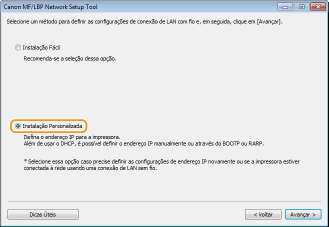
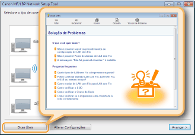

0KUF-00K
Conecte a impressora a um computador através de um roteador com fio. Use um cabo LAN para conectar a impressora e o roteador.
 |
O computador e o roteador foram conectados corretamente através de um cabo LAN? Para mais informações, consulte os manuais de instrução dos dispositivos utilizados ou entre em contato com os fabricantes.
As definições de rede foram concluídas em seu computador? Se a rede não foi configurada adequadamente, você não será capaz de usar a impressora na rede LAN com fio, mesmo se executar o resto do procedimento abaixo corretamente.
|
|
|
|
Ao mudar o método de conexão de LAN sem fio para LAN com fio
Você precisa desinstalar o driver de impressora instalado atualmente, configurar a conexão LAN com fio e reinstalar o driver de impressora. Ao configurar a conexão LAN com fio, selecione [Instalação Personalizada] como método de configuração.
 |
 |
|
A impressora não vem com um roteador ou cabo LAN. Providencie-os conforme o necessário. Use um cabo de par torcido de categoria 5 ou superior para a LAN.
Certifique-se de que há portas disponíveis no roteador para conectar a impressora e o computador.
Para obter mais informações sobre os tipos de Ethernet suportados pela impressora, consulte o Manual eletrônico fornecido com a impressora.
Não é possível usar uma LAN com fio e uma LAN sem fio simultaneamente.
Se usar a impressora em um escritório, consulte seu administrador de rede.
|
1
Faça o login no computador com uma conta de administrador.
2
Inicie a MF/LBP Network Setup Tool.
A MF/LBP Network Setup Tool pode ser iniciada do CD-ROM ou DVD ou a partir de um arquivo baixado.
Iniciando a partir do CD-ROM ou DVD
Inicializando a partir de um arquivo baixado
Iniciando a partir do CD-ROM ou DVD
Inicializando a partir de um arquivo baixado
3
Siga as instruções na tela para configurar as definições da LAN com fio.


Se não entender alguma coisa
Clique em [Dicas Úteis] na parte inferior esquerda da tela para exibir das dicas de solução de problemas.

Se não está seguro como fazer uma conexão com cabo LAN
Consulte o "Manual eletrônico" fornecido com a sua impressora sobre o método de conexão da impressora, e a solução de problemas de conexão do cabo ou do roteador.